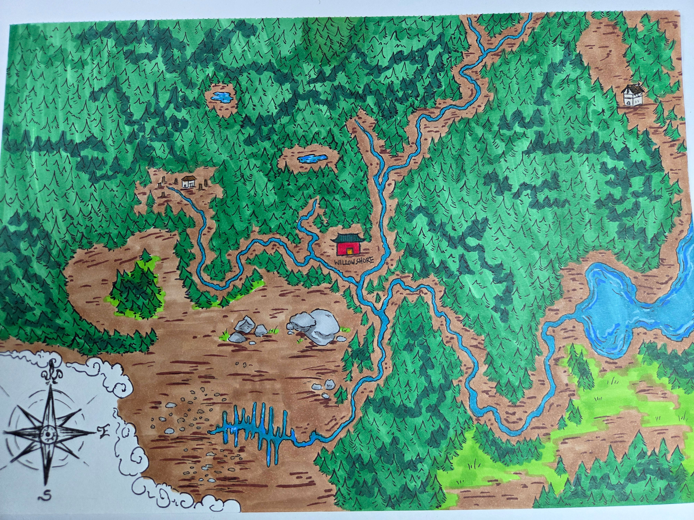
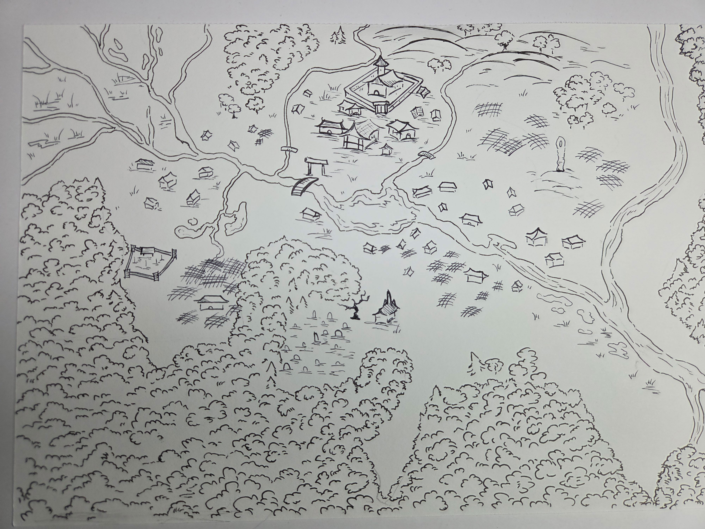

Willowshore¶
A place of faded glory and stubborn heart.
Overview¶
| Type | Village |
| Region | Northern Chu Ye |
| River | Yanzy River |
| Government | De facto rule by local family; oni mayor arriving |
Maps¶
Regional Map¶

Willowshore sits at the confluence of rivers, surrounded by dense forest. A lake lies to the east.
Town Map¶

The village features a central manor, torii gate with bridge, scattered buildings, farmland, and a graveyard. Dense forest presses in from the south.
Description¶
Nestled on a slow bend of the rain-swollen Yanzy River, the town of Willowshore is a place of faded glory and stubborn heart. Here at the edge of Chu Ye's wild, mysterious forest, old festivals are honored even as old wounds fester. Strangers' footsteps are watched, and secrets settle thick as mist along the water's edge.
The town sits at a junction of rivers—once a thriving logging and mining hub, now a skeleton of its former self. The closest shore leads north to the sea; the rivers join together into a large lake to the east.
History¶
Willowshore had a heyday long ago, but those days are past. The old industries collapsed, and the population dwindled. For generations, the village was too small and poor to warrant attention from Shogun Tsuneni's regime. In the oni's absence, a local family rose to become de facto rulers.
Now, after generations without an oni mayor, one is finally arriving—claiming to have "always been here." This has stirred unrest and reopened old divisions.
Traditions¶
The Revival of Friendship¶
A traditional rite observed at every change of power—whether a new store manager or a new mayor—where old grudges are publicly put to rest. It serves as an unofficial but very customary Transfer of Power.
The ruling family is refusing to participate in the ceremony for the new oni mayor. This defiance has created tension throughout the village.
Festival of Returning Spirits¶
An ancient festival held on the eve of autumn, meant to protect Willowshore from whatever haunts the dark woods beyond. The whole town gathers as lanterns flicker and drums thrum. Participants are chosen to lead a ceremonial play, walking in the shadows as the founders once did—acting out the fragile bargain that keeps the unknown at bay.
The Forest Story¶
The oldest story villagers whisper about the forest shadows involves will-o-wisps that lead people astray into the woods.
Why no one speaks the ending:
The story's ending is never told aloud—not because it's forgotten, but because no one can agree on it, and speaking it starts fights. The disagreement runs deep, touching on old loyalties and resentments.
The truth, known to few: The ending embarrasses the ruling family. The heir to the family fortune was said to have been "lured away by forest spirits." In reality, he simply got drunk and wandered into the woods. His father—a teetotaler—spun the tale about spirits to save face.
This deception created factions. Some people secretly blame each other; some welcomed the oni as a chance to unseat the old rulers. One member of the ruling family (The Smiling One) whispers when they think no one is listening: "I know the real ending."
Local Customs¶
- Averting eyes from oni: When oni enter town, lower classes must avert their gaze—only the ruling class may look upon them
- "I've always been here": The official stance that oni have always been present, despite obvious evidence otherwise
- Spirit death rituals: Local legend holds that death near a spirit requires special disposal of the body, lest it return or be controlled
Notable Locations¶
| Location | Description |
|---|---|
| The Yeshou Estate | Former manor of the ruling family; now occupied by Magistrate Kurosawa |
| The Torii Gate | Traditional gate at the bridge crossing |
| The Graveyard | Cemetery with family plots, shrines, and cricket cages near the Dark Woods edge |
| The River | Site of strange occurrences; where Ginkgo and Da Baishan witnessed a spirit killing |
| Eternal Blaze Ironworks | Blacksmith shop run by Yong, a young kitsune |
| Silver Mist Lodge | Once-grand inn on the riverside; where the ruling family is temporarily staying |
| Dew Drop Petals | Salon and spa run by Radiant Willow |
| Cloud Paper Lodge | Paper lantern shop; their fireworks were stored in the warehouse |
| The Luckless Cod | Local tavern where workers drink after hours |
| The Warehouse | Dock storage for festival fireworks; partially destroyed by fire |
| The Dark Woods | Dense forest to the north; home of the Mourndusk Willow; dangerous at night |
Key Figures¶
Oni Regime¶
- Magistrate Kurosawa — Blue-skinned oni sent to prepare for the mayor's arrival
- Mayor Masru — The incoming oni mayor (not yet arrived)
Residents¶
- Migo — Matriarch of the Yeshou family
- The Smiling One — Ruling family member who "knows the real ending"
- Donkey — Ancient elf wizard; village witch
- Yong — Kitsune blacksmith at Eternal Blaze Ironworks
- Hong — Yong's son; hired to set the warehouse fire
- Radiant Willow — Flower leshy beautician at Dew Drop Petals
Visitors¶
- Da Baishan — Orc investigator drawn by suspicion of the oni
- Boone — Dwarf fighter from distant lands
- Ginkgo — Fungus leshy cleric gathering information
- Littlefinger — Halfling rogue with ties to the ruling family
- Cassian Voss — (deceased) Researcher from Absalom who studied "old gods"; now an untethered spirit
Session History¶
Session Zero (2026-01-16)¶
- Village established as the campaign's starting location
- World-building created the Revival of Friendship tradition
- The forest story and its forbidden ending established
- "The Smiling One" created as a mystery NPC
- The torii gate, bridge, and river featured in character bonds
Session One (2026-01-30)¶
- Magistrate Kurosawa introduced as the advance guard for the mayor
- The ruling family displaced from their estate to Silver Mist Lodge
- A warehouse fire destroyed many festival preparations; children rescued by the party
- Multiple new locations discovered and visited by the party
Session Two (2026-02-05)¶
- Hong revealed as the arsonist, hired by the Yeshou family
- Migo introduced as the family matriarch; admitted to the sabotage and canceled further plans
- Kurosawa's secret visits to the Mourndusk Willow in the Dark Woods revealed
- Undead rose in the graveyard for the first time in living memory
- The party fought a ghoul, a zombie, and an undead cat at the cemetery
- A spirit connected to Ginkgo and Da Baishan's secret appeared during and after combat
- Yong planning to leave Willowshore; "sees dark skies ahead"
Session Three (2026-02-12)¶
- The party explored the Dark Woods and discovered a dark summoning ritual at the Mourndusk Willow
- The river spirit identified as Cassian Voss, a foreign researcher from Absalom
- Fought blight-infected wildlife at the Mourndusk Willow; Ginkgo created a salve to cleanse the lichen blight
- Migo identified the ritual as a summoning of the "Mother of a Thousand Wings"—an ancient demon of pestilence
- Willowshore revealed to sit at a convergence of ley lines—arcane geomancy paths that mirror the five rivers on the surface
- Migo disclosed secret entrances into the Yeshou estate (now occupied by the magistrate)
- Yong delivered runed weapons to the party; confirmed plans to leave for a coastal town after the festival
- Hong reported no further sabotage plots among the town's children
- The Festival of Returning Spirits is set for the next evening